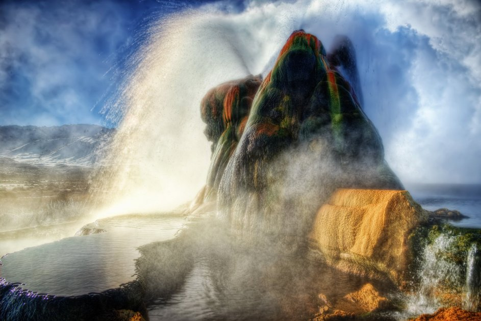

<h2>9. Гейзер Флай, США</h2>
США очень богаты своими природными ресурами, а потому самые необычные места мира здесь сконценрированы в огромном количестве. Американский искусственный гейзер Флай правильнее будет назвать постоянно действующим термальным источником, ведь один из признаков гейзера — непостоянство.
</br>

</br>
Когда-то на этом месте бурили скважину для колодца, после того, как тот перестал функционировать, под землей начались природные реакции, которые привели к образованию этого чуда.
</br>